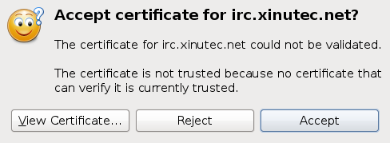

Connecting to IRC
This page provides short explanations on how to add the Xinutec IRC Network to your IRC client and how to connect to it. If your client is not listed here, but you would like to add a short how-to, perhaps with screenshots, feel free to contact our staff.
Irssi
First, download the
CA certificate. Save this under
~/.irssi/xinutec.pem. Then, add the Xinutec network to your configuration
with the following command:
/network add xinutec
Without client certificate, enter this command, all on one line:
/server add -ssl_cafile ~/.irssi/xinutec.pem
-auto -network xinutec irc.xinutec.net In case you do have a client certificate with associated private key, save
them both in
~/.irssi/client.pem and use the following command, again all on
one line:
/server add -ssl_cafile ~/.irssi/xinutec.pem
-ssl_cert ~/.irssi/client.pem
-auto -network xinutec irc.xinutec.net In case you already registered the network and server in your client, you can
either remove the server with
/server remove irc.xinutec.net and re-add it
as above, or manually edit the configuration file, so that it contains a
section like this:
{
address = "irc.xinutec.net";
chatnet = "xinutec";
port = "6697";
ssl_cert = "~/.irssi/client.pem";
ssl_cafile = "~/.irssi/xinutec.pem";
autoconnect = "yes";
}, Common to purple based clients
Pidgin, Empathy and other libpurple based clients store the CA certificates in a common place.
Our Xinutec
CA certificate should be saved in the global CA store.
Save it as
Xinutec_CA.pem under
/usr/share/purple/ca-certs (or
/usr/local/share/purple/ca-certs as appropriate). Under Windows, save it
under
C:\Program Files\Pidgin\ca-certs (or
C:\Program Files
(x86)\Pidgin\ca-certs as appropriate).
Pidgin
Refer to the above section about purple clients for the CA certificate.
Next, add the IRC server to your client:

Click "Add" in the "Manage Accounts" dialog and enter the following information in the Basic tab:

Now, we need to tell Pidgin that we want to have an encrypted connection. Make sure you change the port number to 6697 and check the SSL checkbox.

If you get the following message box, the installation of our CA certificate went wrong.

In that case, click "View Certificate", which will bring this information window:

Copy the information and then click OK and accept and contact a staff member to help solve the problem.